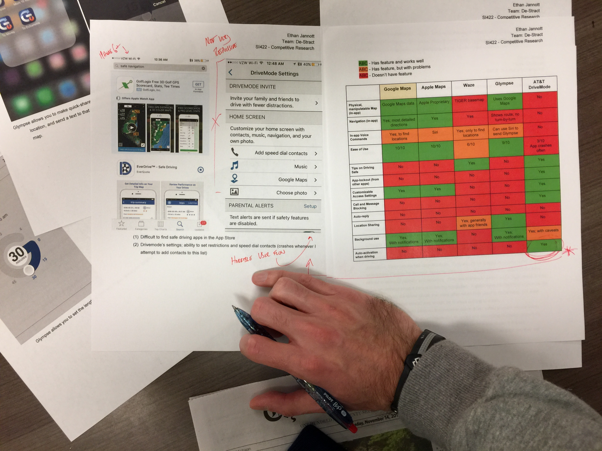
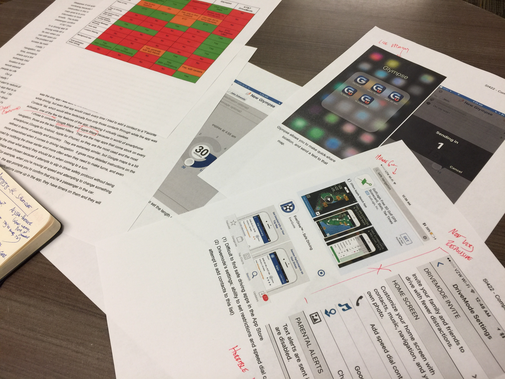
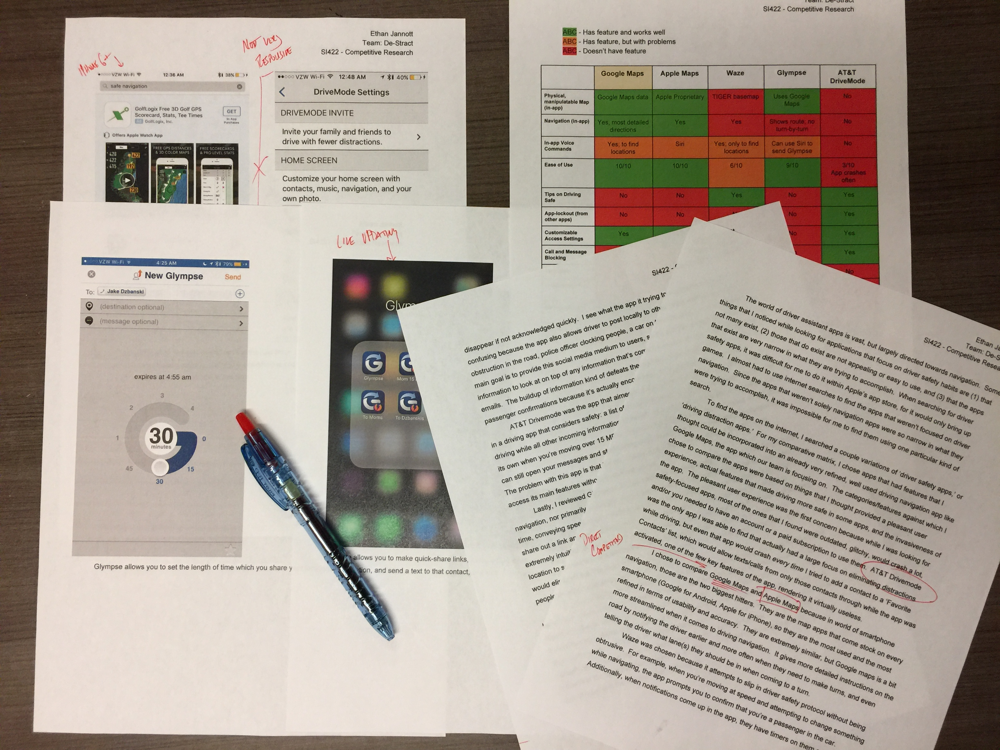

In today’s connected world, phone use behind the wheel is an increasing problem. The problem is somewhat paradoxical because smartphones are now many people’s main navigation tool. My team and I challenged ourselves to create a driving navigation application that prevents phone use, but also conveys important connectivity information to the user.
What my group designed was a mobile application that uses in-app notifications oppose to default phone notifications. This way, the app can filter what is important to alert the user of based on their preferences (contacts, keywords, etc.). The app then only allows the user to respond via voice, or with predictive responses.
The two most important things with this application are (1) that it is very quick and responsive so that the user isn’t ever tempted to back out of the application, and (2) that it’s integrated with the car. Ideally, the phone OS would be seamlessly integrated with the car’s infotainment system and the user would never have to touch their phone after opening the app.
As my team’s leader, I lead my 3 teammates through the design process of this entire project. We established a problem statement - simply, people attach different levels of value to different types of notifications on their phones. People also rely their phone heavily for driving navigation. How can you deliver only important information to users in a safe, non-obstructive way? We established our target users by creating personas and scenarios. We took steps to figuring out what features our product should have by doing a competitive analysis, then interviewing users of the most popular applications that people used for navigation. I conducted 3 different 1-hour interviews with existing mobile-navigation users. From here, we figured out what information people valued through an online survey that I made. I also created mockups of different notification types on prototyped screens, which our group then narrowed down to two versions, which I then ran A-B tests on with participants.
This project was for a class that focused on walking through the process of discovering users and focusing on user-centered design. While we didn’t make a prototype for our product, I would eventually like to turn my sketches and mockup screens into a working prototype to see a user-flow might look like.